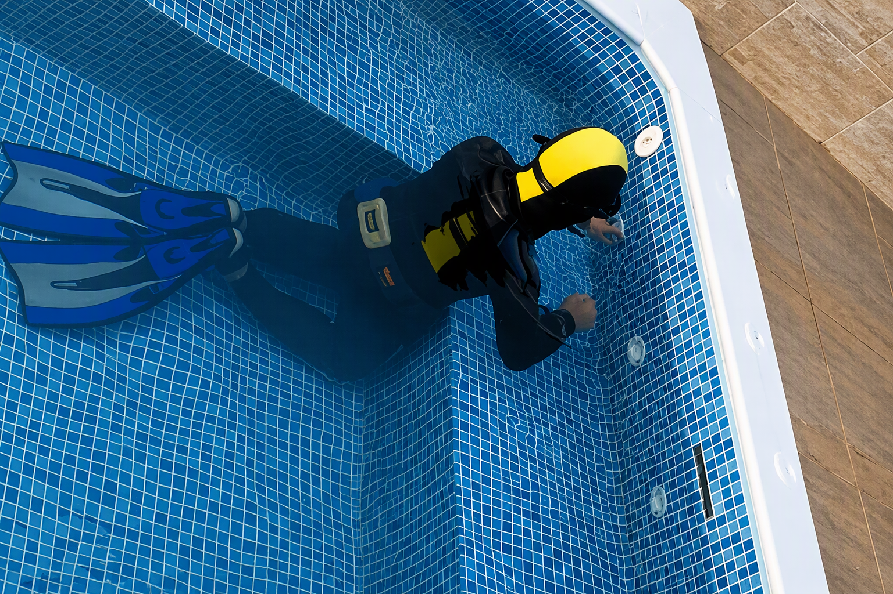

Detecção de vazamentos em piscinas
O serviço mais pedido pela RM. Conta de água alta, piscina baixando o nível ou azulejo solto: localizamos a origem exata na estrutura, tubulação ou equipamento, sem quebrar o revestimento.

Localizamos o ponto exato do vazamento com equipamento de alta tecnologia: diagnóstico preciso e atendimento rápido, para piscinas, residências, condomínios e empresas em toda a Grande São Paulo.
Quanto antes você chama, menor o dano e menor o custo do reparo.
Equipamento eletrônico de alta precisão para localizar o vazamento exato, sem quebra-quebra para procurar.
O serviço mais pedido pela RM. Conta de água alta, piscina baixando o nível ou azulejo solto: localizamos a origem exata na estrutura, tubulação ou equipamento, sem quebrar o revestimento.

Vazamento em parede, laje ou piso identificado antes que o dano estrutural aumente.
Diagnóstico rápido para síndicos: menos desperdício nas áreas comuns e menos conflito entre unidades.
Menos água parada, menos prejuízo operacional. Laudo técnico para embasar a decisão do reparo.
O que diferencia a RM Caça Vazamentos de uma reforma às cegas.
Geofones, câmeras e sensores eletrônicos que localizam o vazamento com precisão milimétrica.
Equipe pronta para agir assim que você entra em contato: quanto antes, menor o dano.
Você não paga para quebrar o que não precisa. Localizamos primeiro, indicamos depois.
Relatório técnico com a localização exata do vazamento e recomendação de reparo.
Anos de campo em piscinas, residências, condomínios e empresas de toda a região.
Do primeiro contato à solução, em quatro etapas objetivas.
Você chama a gente pelo WhatsApp e conta o que está acontecendo.
Nossa equipe vai até o local com equipamento de detecção eletrônica.
Identificamos o ponto exato do vazamento, sem quebra-quebra para procurar.
Você recebe o laudo e decide o reparo, com a nossa indicação, se precisar.

Conta de água subindo sem explicação, piscina perdendo nível mais rápido que o esperado pela evaporação, azulejo solto ou área ao redor sempre úmida: sinais assim costumam indicar vazamento na estrutura, na tubulação ou no equipamento de recirculação.
Localizamos o ponto exato com equipamento eletrônico, sem furar ou esvaziar a piscina sem necessidade.
A RM Caça Vazamentos nasceu para resolver algo que incomoda qualquer dono de imóvel: descobrir onde está um vazamento sem precisar quebrar tudo para procurar.
Trabalhamos com equipamento de detecção eletrônica de alta tecnologia e atendimento rápido, para que o problema seja resolvido com o mínimo de transtorno possível, em piscinas, residências, condomínios e empresas de toda a região de São Paulo.

Fale agora com quem tem o equipamento certo para encontrar o problema sem quebrar o que não precisa.
Olá! 👋 Precisa localizar um vazamento? Fale com a nossa equipe agora e receba orientação rápida, sem compromisso.
Iniciar conversa no WhatsAppVocê será direcionado ao WhatsApp com uma mensagem pronta.